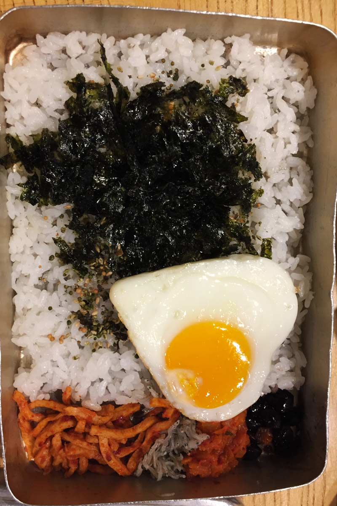
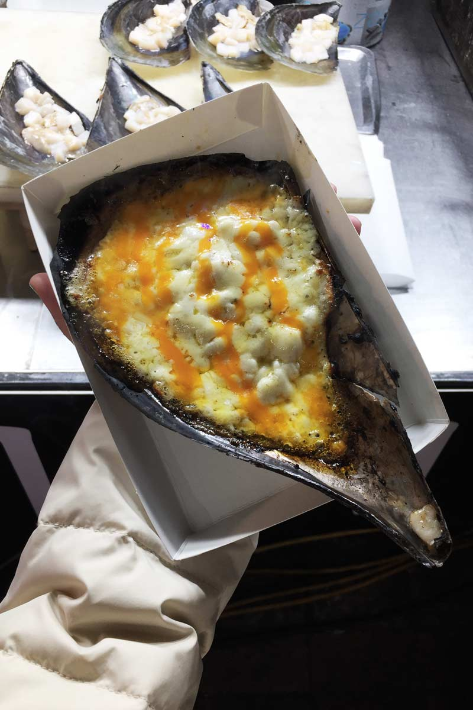

Myeongdong
Myeongdong is one of the biggest shopping in Seoul. You can find a lot of clothing and beauty brands. Myeongdong also has great street food you can find along the street. People tend to go there during the late evening until night time. I would recommend going there if you want to buy any beauty products or clothing.
Myeong-dong is one of the primary shopping districts in Seoul. The two main streets meet in the center of the block with one beginning from Myeong-dong Subway Station (Seoul Subway Line No. 4) and the other from Lotte Department Store at Euljiro. Many brand name shops and department stores line the streets and alleys. Common products for sale include clothes, shoes, and accessories.
Shopping
South Korea is known for its beauty industries especially plastic surgery. A lot of people go there just to get their nose job. Even though I am not interested in plastic surgery but I bought some skincare back. As you can see from the photo, I bought a few face mask back. The brand called 'Fila' is very famous in South Korea and other Asian countries. If you need any type of skincare, you would find all you need in South Korea.
Myeongdong always belong to top places to visit in South Korea for its abundant shopping supplies and aesthetic surrounding. Although so many skin care and beauty stores stand on Myeongdong street, offering both cheap and expensive products, each of them has their own outstanding brand names and good quality products.
Some skincare brand names you can find here: Laneige, Skin food, IOPE, Innisfree, Stylenanda 3CE, Olive Young, Boots, Aritaum, Nature Republic, Primera, Etude House.
For more premium brands such as Sulwhasoo, History of Whoo, Hera, Amore Pacific, your best choice is the Lotte Department Store.
Korean food
From meat grilled on the table before you, to boiling hot stews, to chilies and pickles, Korean food is almost impossible not to fall in love with.
South Korea is not only known for its beauty industries but its food is also delicious. In the photo above is Korea food called Tteokbokki also known as rice cake. It is a sticky, chewy and yummy snack. You need to try this or else they say you haven't been to Korea yet. Another thing you have to try in Korea is Kimchi. Kimchi is a fermented vegetable dish. Koreans normally have it as a side dish with porridge, noodles or soup. Korean food is a must try!
Places
O'sulloc Tea house
O'sulloc Tea House is a popular Korean green tea cafe located in Myeongdong, Seoul. The O’Sulloc brand has much developed and modernized, being one of the major tea exporters from Korea, known for using technology for planting, producing and packaging. They serve both drinks and bakeries. Drink wise, they are well known for the Osulloc Green tea Latte, Jeju Tangerine Milk tea, and Apple Honey Tea Latte.
They are also known for their Green Tea Roll and Green Tea Tiramisu. I tried their Charcoal Green Tea Roll but the texture was as soft and fluffy as I expected. Their teas are well blended and unique, every combination is combined perfectly. They have a bar with four different types of tea for the customer to try them, just like T2. O'sulloc tea House is a must for tea lovers.
Kakao Friend Cafe
Kakao Ryan Cafe is located in Hongdae, Seoul. Kakao Talk is a famous texting application in South Korea, Ryan is one of their main mascots. Ryan Cafe is one of the features inside this three-story building. Inside the building on the first and second floor, they sell Kakao theme stuff. Most of them are very cute and affordable. Ryan Cafe is located on the third floor. As you could tell from the name, they sell Kakao theme desserts and drinks.
It's not only a great place to take photos and buy some cute things but also a great place to relax. It might be hard to find sits in the cafe during the weekends. Also besides the Kakao friend building, there is even a Kakao talk museum. It is free, so why not. There are some activities for you to enjoy. Both Kakao Friend and Kakao Talk museum is such a great place to take photos. No wonder why I spend hours in there.
Sinseon Seolleongtang
Sinseon Seolleongtang is well known for their ox bone soup. Just like Western people who eat either, toast, cereal or pancake for breakfast, for Korean one of their breakfast menu is porridge. Sellengtang is very famous at making ox-bone soup. It is a chain store that branches all over South Korea but the Myeongdong branch is particularly famous and well known among Japanese tourists. Seolleongtang or ox-bone soup is made of simmering ox bones, intestine and shank for several hours until the broth becomes rich and creamy white. When it is eaten with rice, kimchi, and other side dishes, I would say it is one of the best meals that I have eaten. In the restaurant, there are multiple Korean means the restaurant is native approve. There was also a queue but it wasn't too long but I would say it is definitely worth it.
James Cheese Back Ribs
James Cheese Back Rib is very famous because of its Cheese Deung Galbi. There are a couple of braches around Seoul but we decided to go to the Myeongdong one because our hotel is in Myeongdong. It is quite hard to spot the entrance because it's a very thin stair up. Inside it is quite crowded and small. It is not the best dining place you are looking for if you wanted a relaxing place to sit. The noise inside is very loud because there is no noise ventilation but the food is quite decent. Their menu is very simple and straight forward. The price is not bad comparing to the amount you get.
We ordered their famous Cheese Galbi. They give you lots of cheese and back ribs. You could choose your spicy level and side dishes. The best part is to watch the server to help you cook the cheese. They curl the cheese around the back rib and PAM PAM ready for you to enjoy. The rib itself is not as juicy as I expected but with the cheese it's DELICIOUS.
Gallery

Korean lunch

32cm Ice cream

Banana Ica cream

Grilled cheese over scallop

Porridge beef favoureds

Cheese Calbi

Tteok / Rice cake
Kakao cafe

Myeongdong at night
Grilled meat on hot stones